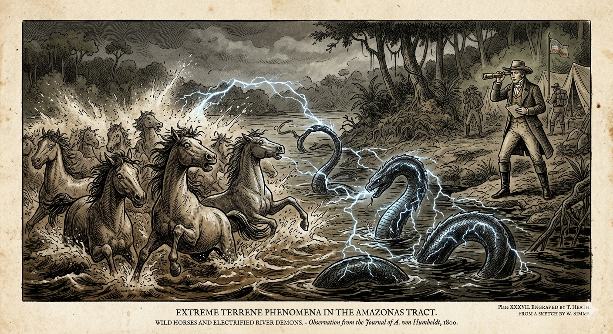
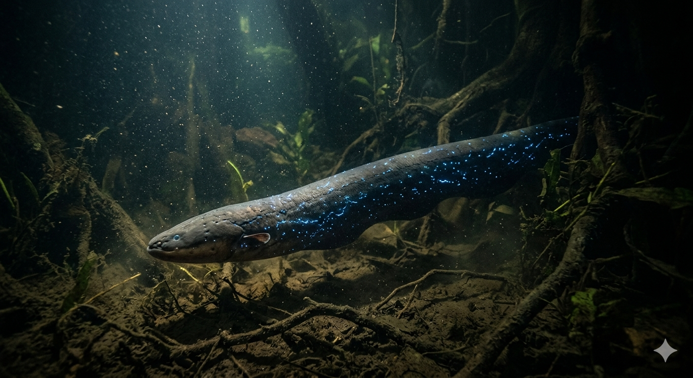

הצלופח החשמלי
משד הנהרות הבלתי נראה של האמזונס אל סוללת הטבע החיה
מחקר אטימולוגי: מקור השמות
השם המדעי הטקסונומי: Electrophorus electricus
השם המדעי, שהוענק על ידי קארולוס ליניאוס ב-1766, אינו מותיר מקום לספק באשר לתכונה המרכזית של היצור, ומשלב מונחים מיוונית ולטינית:
- Electro: מהמילה היוונית Elektron (ἤλεκτροן), שפירושה המקורי "ענבר" (חומר שדרכו גילו היוונים את החשמל הסטטי), והפכה לשם נרדף לחשמל.
- phorus: מהמילה היוונית Phoros (φόρος), שפירושה "נושא" או "מביא".
- electricus: שם המין (בלטינית), שפירושו פשוט "חשמלי". השם המלא מתורגם מילולית כ: "נושא-החשמל החשמלי".
השם הפולקלוריסטי (שפות טופי-גוארני): Poraquê
- פוראקה (Poraquê): השם שבו מכנים אותו ילידי האמזונס עד היום. בשפתם, משמעות המילה היא "זה שמרדים", "זה שמשתק" או "מביא השינה" – תיאור מדויק להפליא של הפעולה שהחשמל שלו עושה למערכת העצבים של הטרף (או של דייג חסר מזל).
התגלית המחשמלת של פון הומבולדט
האירופאים הראשונים שהגיעו לאמזונס סירבו להאמין לסיפורי המקומיים על רוחות נהר שמשתקות סוסים ובני אדם מרחוק. הם ייחסו זאת לאמונות טפלות או לשדים דמיוניים.
אולם, בשנת 1800, הגיע לאזור איש האשכולות והחוקר הפרוסי הדגול אלכסנדר פון הומבולדט (Alexander von Humboldt, 1769–1859). הוא רצה לתפוס ולחקור את ה"מפלצות" האלו בחיים. המקומיים הסבירו לו שהם לא יכולים פשוט להיכנס למים עם רשת, כי הדג יהרוג אותם או ישתק אותם והם יטבעו.
במקום זאת, הם השתמשו בשיטה אכזרית אך אפקטיבית: "דיג באמצעות סוסים". הם הריצו עדר של סוסי בר לתוך הבריכות הבוציות. הצלופחים, שהרגישו מאוימים מפרסות הסוסים, פרקו שוב ושוב את מטעני החשמל שלהם כלפי מעלה בניסיון להתגונן, עד שהם פשוט התרוקנו מאנרגיה ("הסוללה" שלהם התרוקנה). רק אז, כשהצלופחים היו מותשים, הילידים יכלו להיכנס למים ולאסוף אותם בבטחה עבור הומבולדט. התגלית שלו הוכיחה מעבר לכל ספק שחשמל ביולוגי עוצמתי אינו קסם – אלא מציאות.
המיתוס מול המציאות האבולוציונית
האגדה: שד בלתי נראה, נחש קסום או מכשף מים המשתמש בכוחות על-טבעיים כדי לשתק קורבנות ללא מגע, כפי שתואר בפולקלור האינדיאני.
המציאות: אנטומיה שמדענים עד היום לומדים ממנה כדי לפתח סוללות ביולוגיות. ופרט מפתיע לא פחות: הצלופח החשמלי הוא בכלל לא צלופח! הוא שייך למשפחת דגי הסכין (Gymnotiformes), וקרוב יותר גנטית לשפמנון מאשר לצלופח אמיתי (כמו המורנה).
מאפיינים ביולוגיים: סוללה באורך שני מטרים
- אנטומיית סוללה: כ-80% מגופו של הדג מורכב משלושה איברים חשמליים ייעודיים (האיבר הראשי, איבר האנטר, ואיבר זאקס). רק ה-20% הקדמיים של גופו מכילים את איבריו הפנימיים האמיתיים (לב, כבד, מעיים).
- עוצמת החשמול: גופו מכיל אלפי תאים ייחודיים הנקראים אלקטרוציטים המסודרים בטור, כמו סוללות בפנס. כשכל התאים נפרקים יחד, הם יכולים לייצר מכת חשמל במתח של עד 860 וולט (פי 3.5 משקע חשמל ביתי!).
- ראיית רדאר: מאחר שהוא חי במים עכורים ובוציים וראייתו חלשה מאוד, הוא משתמש בפריקות חשמל במתח נמוך מאוד (10 וולט) בתור רדאר/סונאר כדי לנווט ולתקשר עם צלופחים אחרים.
- נושם אוויר (אובליגטורי): המים הבוציים באמזונס דלים בחמצן. לכן, הפה שלו מלא בכלי דם, והוא חייב לעלות אל פני המים כל 10-15 דקות כדי לקחת "שלוק" של אוויר מהאטמוספירה, אחרת יטבע.
זואולוגיה ומחזור חיים (תעודת זהות)
תיעוד חזותי (לחץ להגדלה)

המיתוס: "הדיג באמצעות סוסים" של הומבולדט

המציאות: סוללה ביולוגית במעמקי האמזונס